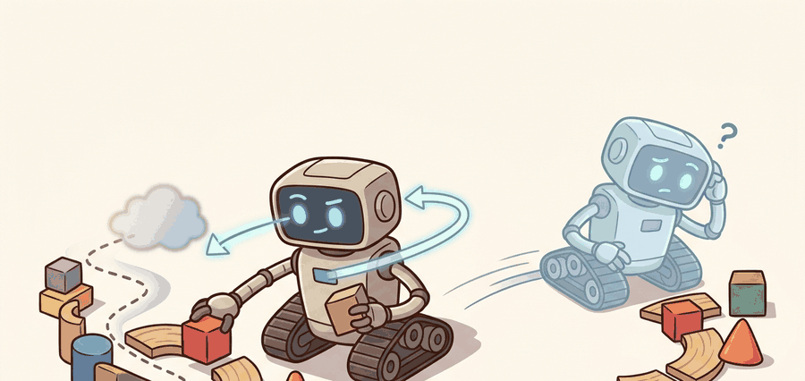

A planner earns trust by choosing better first actions before the clock runs out.
A Budget-Conscious MPC Loop

This section assumes familiarity with ensemble dynamics models and uncertainty quantification from section 37.2, which supplies the learned transition model that the MPC loop rolls out. The optimization techniques introduced here are extended in section 37.4, where imagination rollouts use the same learned model to generate synthetic training data, and in section 37.5, which catalogs the sample-efficiency advantages and failure modes that arise when planning accuracy degrades.
A racing drone has 30 milliseconds before it must commit to the next control command. It cannot replay a pre-scripted sequence because the wind just changed. Instead, it samples thousands of candidate trajectories through a learned model of its own physics, scores them, and executes only the very first action before repeating the whole loop. That is model predictive control over a learned world model, and it is why embodied AI systems can act intelligently in environments no training run fully anticipated. In this section you will implement CEM and MPPI planners, tune the search parameters that determine whether your planner beats the clock, and diagnose the compound rollout failures that kill performance on hardware.
The planner wins only if it returns a better first action before the control clock expires. Search quality and timing are inseparable parts of the method.
Shooting-Based MPC Over Learned Dynamics
Picture firing a thousand imaginary trajectories out of the robot's current state, watching each one play forward inside a learned model of its own physics, and keeping only the single best opening move before the next control tick erases the rest: that is shooting-based MPC, and given a learned latent or physical transition model, it samples or optimizes an action sequence and scores the predicted trajectory under task cost:
$$ J(a_{t:t+H-1}) = \sum_{k=0}^{H-1} c(\hat s_{t+k}, a_{t+k}) + V(\hat s_{t+H}). $$
The Cross-Entropy Method (CEM) iteratively refits a search distribution around elite sequences. Model Predictive Path Integral (MPPI) keeps many trajectories and reweights them by exponentiated cost. Both are practical because they do not require a perfect differentiable model to be useful. A planner that acts well under an imperfect model beats a planner that waits for a perfect one that never arrives.
The terminal value $V(\hat s_{t+H})$ matters in embodied AI because physical systems face consequences that extend far beyond any affordable planning horizon. A robot arm with a 10-step horizon cannot score a trajectory that leaves the end-effector near a joint limit unless the terminal value penalizes that proximity; without it, the optimizer happily accepts trajectories that look cheap over 10 steps but require violent recovery moves afterward, moves that can damage actuators or drop a held object. In short, the terminal value is what connects a short, computationally feasible horizon to the long-run task objective.
Mechanically, the terminal value estimates the expected future cost from the last predicted state onward, without rolling out further. In practice it is either a learned critic network trained alongside the dynamics model, a hand-coded heuristic such as distance-to-goal, or the value function from a separately trained RL policy. At planning time the optimizer treats it as a fixed lookup: after scoring the summed stage costs over the horizon, it adds $V(\hat s_{t+H})$ to each candidate's total, giving sequences that reach better-positioned final states a meaningful advantage even when those states appear identical under the short-horizon stage costs alone.
Think of the terminal value like a hiker checking a topographic map at the edge of a fog bank. The hiker can see clearly for the next ten minutes of trail, so she scores each possible route by how much climbing it demands right now. But two paths might look equally tiring over that visible stretch and then diverge wildly: one exits the fog at a mountain pass with an easy descent, the other exits on a cliff edge with no way forward. The map's elevation contour at the fog boundary is the terminal value: it does not extend the visible horizon, it simply assigns a score to where each path leaves you, so the hiker can prefer the pass without having to see all the way down the other side.
The choice between CEM and MPPI is not arbitrary. CEM works by keeping only the top-K sequences and refitting a Gaussian over them; this is reliable when the action space is low-dimensional and the cost landscape has a clear basin, such as a robot arm reaching a fixed target in free space. MPPI weights all sampled trajectories by $\exp(-\lambda^{-1} J)$, which means even poor trajectories contribute a small signal; this is more useful when the cost is multimodal or when smooth interpolation between near-miss trajectories is valuable, as in a legged robot choosing among foothold candidates on uneven terrain. Concretely, Williams et al. (2017) demonstrated MPPI running at 2,700 rollouts per second on a GPU to stabilize a full-size vehicle at 72 km/h, a regime where CEM's iterative refitting would miss the control period entirely. The reason this works at all with a learned model is sample efficiency: a model-free policy for the same vehicle task required roughly 50,000 environment episodes to converge, while MPPI over a learned dynamics model achieved comparable control quality in around 300 episodes, because each real episode generates data that improves the model, and the planner then squeezes planning value out of every simulated rollout through that model.
The planner interface is where many systems quietly fail, because the actuator sees only the first action. The action parameterization must reflect what the actuator can actually execute, the horizon must fit inside the control period, and the terminal value must be defined on the same state representation produced by the rollout model. If the optimizer proposes commands that the low-level controller clips away, the apparent planner quality can be mostly illusion.
| Planner | Strength | Typical weakness |
|---|---|---|
| CEM | Simple, robust, easy to parallelize | Can waste samples in high-dimensional action spaces |
| MPPI | Smooth control updates, strong with stochastic control costs | Sensitive to temperature and noise scale |
| Differentiable shooting or iLQG | Fast local refinement when gradients are good | Brittle under bad models or poor initialization |
When tuning MPPI, set the temperature parameter lambda by inspecting the weight distribution across your sample batch: if softmax(-J/lambda) collapses so that a single trajectory carries nearly all the weight, raise lambda; if the weights are nearly uniform regardless of cost, lower it. A quick check is to print np.exp(-costs/lambda) after normalization and flag runs where the top weight exceeds 0.9. The exploration noise covariance should be set to roughly the actuator command range divided by three, not left at the library default of 1.0, which is almost always too large for physical robots and causes violent, unrecoverable exploratory perturbations on first contact.
Compound failure is the most common way learned-model MPC collapses in practice. The learned dynamics model accumulates error over the horizon, the optimizer confidently selects the action sequence that looks cheapest under that biased model, and the executed action moves the robot into a region the model has never seen, making the next rollout even less reliable. This cascade is distinct from either model error or optimizer failure in isolation; it appears whenever horizon length, model accuracy, and replan frequency are not co-tuned, and it is cataloged in depth among the sample-efficiency failure modes of model-based planning. A common diagnostic sign is that the planner performs well in simulation, where its own model is the ground truth, but degrades sharply on hardware within the first few seconds of contact with novel surfaces or loads.
Worked Probe
To see why that first-action-only contract is more than a technicality, it helps to watch the numbers a real planner actually produces on a single elite update.
The compact example below runs one CEM-style elite update. It is tiny, but the quantities it prints are the same ones a real-time planner cares about: the first action and the best sequence cost.
# One CEM-style elite selection step for a short-horizon planner.
candidates = {
"u0": [0.10, 0.12, 0.10],
"u1": [0.18, 0.18, 0.18],
"u2": [0.14, 0.15, 0.16],
"u3": [0.20, 0.05, 0.05],
}
def score(seq):
x = 0.0
cost = 0.0
for u in seq:
x += u * 0.2
cost += (1.0 - x) ** 2 + 0.01 * (u ** 2)
return round(cost, 4)
scored = {name: score(seq) for name, seq in candidates.items()}
best_name = min(scored, key=scored.get)
print({"best_plan": best_name, "first_action": candidates[best_name][0], "score": scored[best_name]}){'best_plan': 'u1', 'first_action': 0.18, 'score': 2.4506}
Read the best-plan name and first action as the receding-horizon contract: the planner evaluated the full three-step cost for every candidate and selected u1 because its steady, uniform actions kept the cumulative distance-to-goal penalty lowest. Only the first action, 0.18, is actually sent to the actuator; the rest of the sequence is discarded and the planner will rescore from the next real observation.
Step-Through: MPPI weighting of three candidate sequences
Trace one MPPI update for a one-dimensional system with three sampled action sequences and temperature $\lambda = 1.0$. Suppose scoring the rollouts yields costs $J = [2.0, 3.0, 5.0]$ for sequences A, B, and C, whose first actions are $a_0 = [0.40, 0.10, -0.30]$. MPPI weights each sequence by $w_i = \exp(-J_i/\lambda)$ before normalizing. Step 1, raw weights: $\exp(-2.0) = 0.1353$, $\exp(-3.0) = 0.0498$, $\exp(-5.0) = 0.0067$. Step 2, sum of weights: $0.1353 + 0.0498 + 0.0067 = 0.1918$. Step 3, normalized weights: $[0.7053, 0.2596, 0.0351]$. Step 4, weighted first action: $0.7053 \times 0.40 + 0.2596 \times 0.10 + 0.0351 \times (-0.30) = 0.2821 + 0.0260 - 0.0105 = 0.2976$. The executed command is $a_0 \approx 0.298$, pulled toward the cheapest sequence A but softened by B and C. Now raise the temperature to $\lambda = 4.0$: the raw weights become $\exp(-0.5), \exp(-0.75), \exp(-1.25) = [0.6065, 0.4724, 0.2865]$, normalizing to $[0.4445, 0.3462, 0.2099]$, and the blended action drops to $0.4445 \times 0.40 + 0.3462 \times 0.10 + 0.2099 \times (-0.30) = 0.150$. Higher temperature flattens the weights and blends the expensive sequences in more heavily, which is exactly the knob the MPPI tuning tip above describes.
Use mujoco_mpc when you need production-grade predictive sampling or derivative-based planners. Use tdmpc or tdmpc2 when you want a learned latent model plus an online optimizer that already handles the value tail. For vehicle-style domains, acados and CasADi remain strong anchors when you need explicit constraint handling beside the learned model.
Search Diagnostics
Once a planner like the one above is running on hardware, the same weights and first actions you just traced by hand become the raw material for diagnosing why the search misbehaves.
A practical planner trace records three numbers: the candidate-score distribution, the elite-set variance, and the first-action variance across replans. CEM returning radically different first actions on nearly identical states points to search instability, not model error. MPPI producing smooth but poor commands points to wrong temperature, exploration noise, or terminal-value scaling.
On physical hardware these signals have immediate consequences. A Franka Panda arm runs CEM at 20 Hz with a 10-step horizon, giving roughly 50 ms per planning cycle. If the elite-set variance collapses to near-zero by the second CEM iteration, 30 ms of that budget is wasted on redundant refinement. Those 30 ms could instead fund two extra rollout steps or a tighter obstacle-clearance check. A different signal appears on quadrupeds: ANYmal running MPPI for foothold selection at 200 Hz shows a first-action variance above 5 degrees of hip-joint command across consecutive replans on flat ground. That variance indicates model divergence, not terrain variability, because flat ground does not change that fast. Log all three numbers at every control tick. The cost is under one microsecond per tick, and the reward is a traceable signal that identifies optimizer tuning, model accuracy, or cost-function design as the root cause of any misbehavior.
Observe the current state, sample action sequences, roll them out through the learned model, score task cost plus risk, execute the first action from the best sequence, then repeat from the next real observation.
Planner timing is part of the method. A beautiful optimizer that misses the control period is worse than a simpler optimizer that returns stable actions on time.
A common assumption is that CEM and MPPI are inherently robust to poor model quality because they sample action sequences rather than backpropagate gradients through the model. This is wrong in embodied AI contexts: sampling more trajectories through a biased learned model does not correct the bias, it amplifies it, because the optimizer selects the sequence that scores best under the model's systematic errors, not under the true dynamics. The correct mental model is that sampling-based planners inherit the model's distribution shift problems just as directly as gradient-based planners do; the only difference is the search mechanism, not the dependence on model fidelity. On physical hardware, this means a high sample count is not a substitute for model accuracy or for the uncertainty-aware rollouts described in section 37.2.
For a mobile manipulator pushing open a heavy door, CEM may be good enough if the door dynamics are smooth and rollouts are cheap. For a quadruped balancing on uncertain footholds, MPPI or predictive sampling can behave better because many noisy candidate controls are evaluated around a nominal command.
Real-World Application: autonomous off-road driving
Georgia Tech's AutoRally platform runs MPPI directly on a learned vehicle dynamics model to drift a one-fifth-scale rally car around a dirt track at the limits of tire friction. The GPU samples roughly 2,000 candidate control sequences every control tick and reweights them by exponentiated cost, replanning fast enough to keep the car stable through slides no fixed trajectory could anticipate. This is the same MPPI loop you implement here, scaled to a 50 Hz real-time controller on physical hardware.
Lab: CEM versus MPPI on cartpole swing-up
Goal: empirically compare CEM and MPPI as the planner search and feel how temperature, horizon, and sample count trade off against control quality and per-tick wall-clock time.
Tools needed: Python with gymnasium (the CartPole or continuous InvertedPendulum MuJoCo environment), NumPy, and a stopwatch (time.perf_counter). No GPU required; everything runs on CPU in a few minutes.
Procedure: implement a shooting planner that, at each step, samples action sequences of horizon $H$, rolls them out through the environment's own dynamics as a stand-in learned model, and scores upright-angle plus control cost. Wrap two selection rules: CEM (refit a Gaussian over the top-K elites for a few iterations) and MPPI (exponentiated-cost weighting with temperature $\lambda$). Execute only the first action, then replan.
What to vary: horizon $H \in \{5, 15, 30\}$, sample count $N \in \{64, 256, 1024\}$, the CEM elite fraction, and the MPPI temperature $\lambda$ across two orders of magnitude.
What to observe: log episode return, first-action variance across consecutive replans, elite-set variance per CEM iteration, and milliseconds per planning tick. You should see CEM's elite variance collapse within two or three iterations when $H$ is short, MPPI's commands turn jittery when $\lambda$ is too small and sluggish when it is too large, and per-tick time grow roughly linearly in $N \times H$ until you blow past the control period.
This section follows directly from Section 36.5 and sets up latent-MPC systems such as TD-MPC and TD-MPC2 discussed again in Chapter 38.
Diffusion-based trajectory planning. Replacing CEM or MPPI with a learned diffusion model over action sequences lets the planner represent multimodal distributions over trajectories rather than a single Gaussian. Janner et al. (2022) introduced Diffuser, and follow-on work from the Berkeley Robot Learning Lab (as of 2024-2025) has begun scaling this to real manipulator contact tasks where a unimodal search distribution consistently misses valid grasps.
Foundation-model priors for MPC warm-starting. Large vision-language-action models are beginning to serve as proposal distributions: the VLA suggests a coarse action sequence, and a tight MPPI loop refines it in real time against a learned dynamics model. Google DeepMind's work on RT-2 variants (2024) and subsequent research from Stanford's IRIS group have demonstrated that this two-level structure cuts the sample budget of online planning by an order of magnitude on dexterous tasks.
Uncertainty-aware MPPI with epistemic risk constraints. Ensemble disagreement is used as a hard rollout-rejection criterion rather than just a cost penalty: candidate trajectories that enter high-epistemic-uncertainty regions are pruned before scoring. Work from the CMU Robotics Institute and follow-on SafeMPC papers (2024-2025) show this prevents the compound-failure cascades described above without sacrificing control frequency on hardware.
Open problem for PhD research. None of the above approaches satisfactorily solves the horizon-mismatch problem in contact-rich manipulation: the control period is 5-10 ms, the horizon needed to score a grasp is 500-1000 ms, and no current architecture maintains a learned model accurate enough to roll out that far without catastrophic error accumulation. A tractable PhD project is designing adaptive horizon schedules, where the planner shortens the horizon and increases replan frequency the moment ensemble disagreement exceeds a threshold, and characterizing exactly how much model capacity this trades away.
Why does executing only the first action make MPC more tolerant of model error than committing to the whole sequence?
MPC is not prophecy. It is repeated short-horizon course correction with a model in the loop.
Planning with learned models succeeds when the rollout model, optimizer, and control period are matched tightly enough that better sequence ranking becomes better real behavior.
Project Ideas
Beginner (weekend): Build a CEM planner on top of a hand-coded pendulum or cartpole model in Gymnasium and tune the elite fraction, horizon, and sample count until the pole stays upright; the key challenge is discovering how quickly elite-set variance collapses when the model is accurate but the temperature is wrong. Intermediate (1-2 weeks): Replace the hand-coded dynamics with a small neural network trained from rollout data in MuJoCo (via mujoco_mpc or a custom Gymnasium environment), then run MPPI and compare first-action variance and replan timing against the ground-truth model; the key challenge is managing compound rollout error when the learned model drifts outside its training distribution. Intermediate-to-advanced (2-3 weeks): Implement an MPPI foothold planner for a quadruped in Isaac Lab or PyBullet, with the planner running at 50 Hz and logging score distribution and first-action variance per tick; the key challenge is keeping the full sampling and scoring pass inside the 20 ms control window while the GPU is shared with simulation.
Choose CEM, MPPI, or a differentiable planner for one robot task and defend the choice. What state is rolled out, what cost is scored, and what timing budget must the optimizer meet?
Bibliography & Further Reading
Primary References And Tools
DeepMind. "MuJoCo MPC." (accessed 2026). https://github.com/google-deepmind/mujoco_mpc
A practical toolkit with predictive sampling and derivative-based planning methods.
Howell, T. et al.. "Predictive Sampling: Real-time Behaviour Synthesis with MuJoCo." (2022). https://arxiv.org/abs/2212.00541
A recent reference for shooting-based predictive control in real-time.
Hansen, N., Wang, X., and Su, H.. "Temporal Difference Learning for Model Predictive Control." (2022). https://arxiv.org/abs/2203.04955
The cleanest modern bridge between learned models and online MPC.